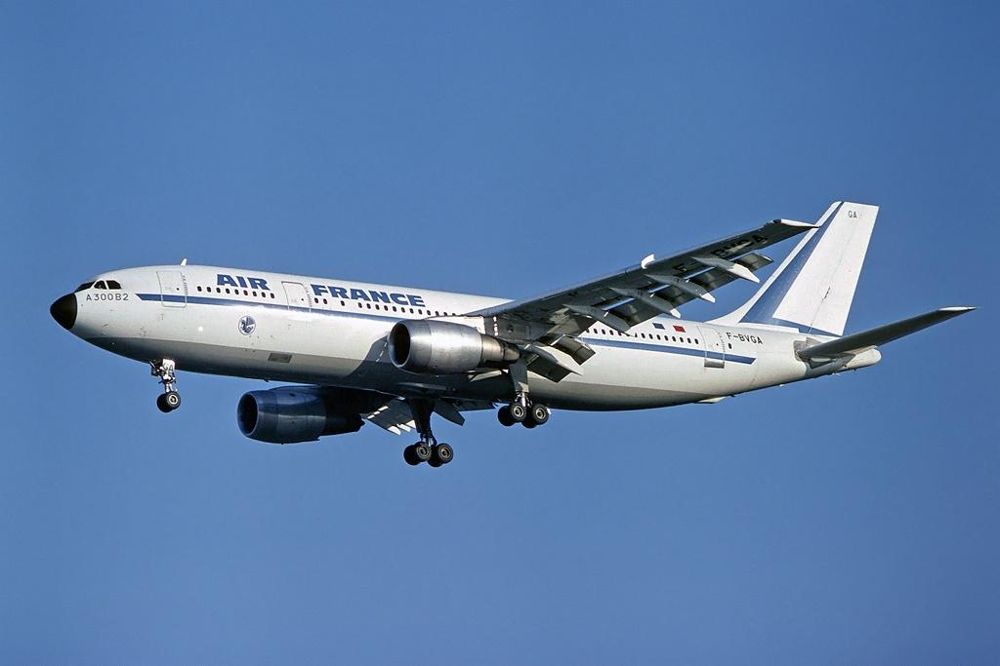
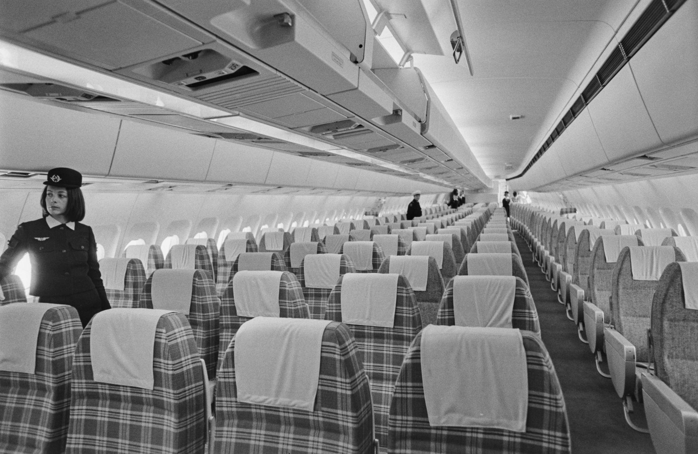
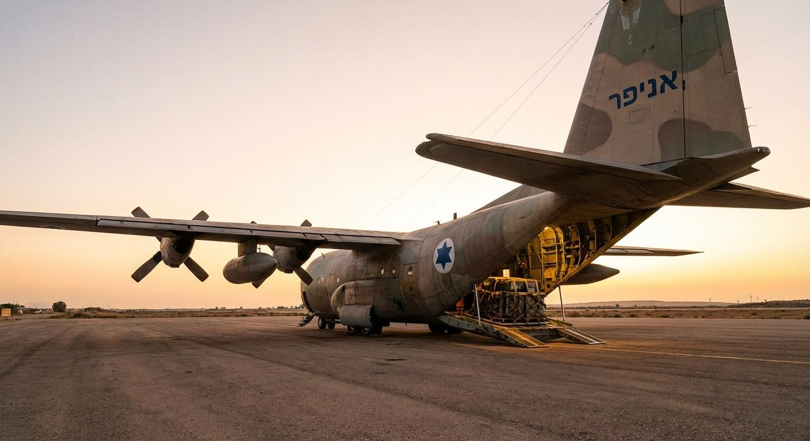
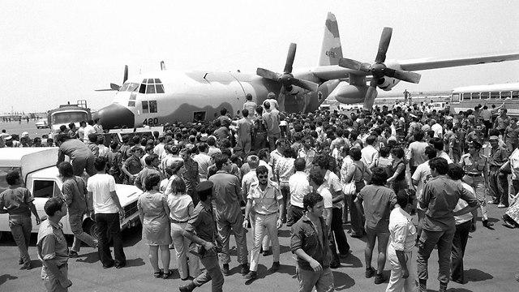
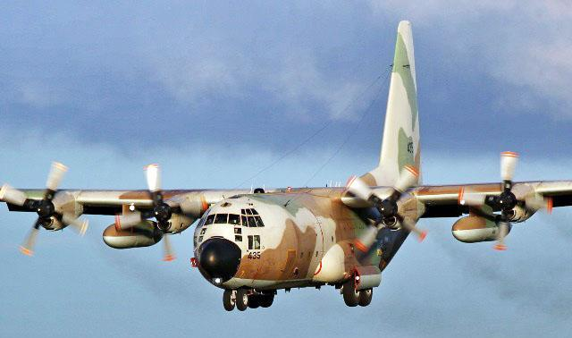
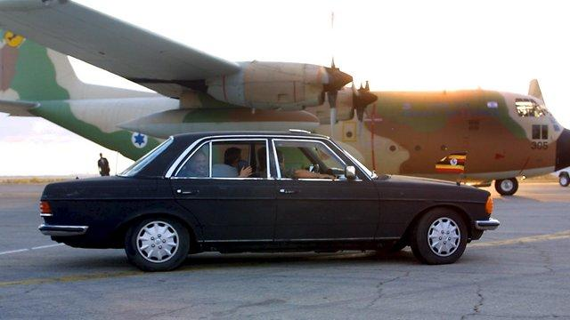
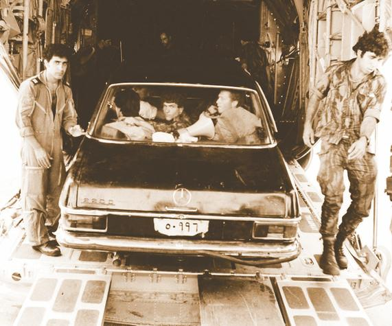
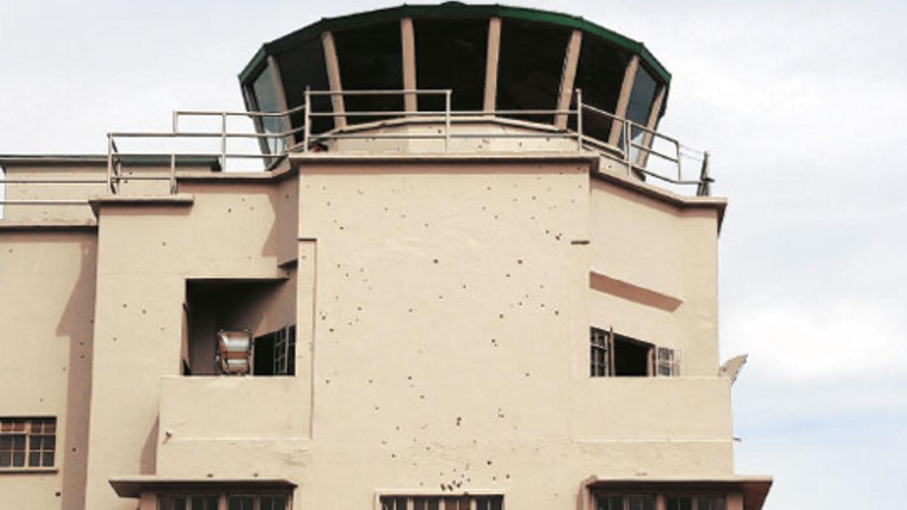
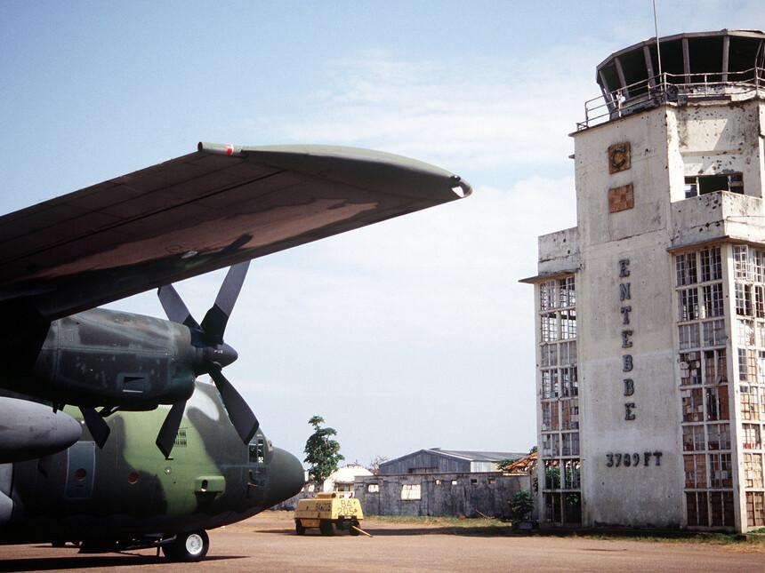

Operation Entebbe: Historical Artifacts and Equipment
Aircraft, Equipment and Historical Evidence | 1976
1. Air France Flight 139 – The Hijacked Aircraft


An Air France Airbus A300, representing the type of aircraft hijacked during Flight 139.
Air France Flight 139 was operated by an Airbus A300, a wide-body passenger aircraft. On June 27, 1976, the
flight was hijacked after departing Athens on its journey from Tel Aviv to Paris.
The aircraft became a central part of the hostage crisis, carrying passengers and crew who were eventually
taken to Entebbe Airport in Uganda.
2. The C-130 Hercules – The Rescue Aircraft



The C-130 Hercules military transport aircraft, a key element of the long-distance rescue mission.
The Israeli rescue forces traveled to Uganda aboard Lockheed C-130 Hercules military transport aircraft.
These planes were capable of carrying soldiers, vehicles and equipment over long distances.
Their large cargo compartments and ability to operate on relatively short runways made them essential to the
mission. The aircraft also transported the rescued hostages away from Entebbe.
3. The Black Mercedes and Military Vehicles


Vehicles representing the disguised convoy used by Israeli commandos during Operation Entebbe.
One of the operation's most unusual details was the use of a black Mercedes-Benz and accompanying Land Rover
vehicles.
The rescue team used these vehicles to imitate the appearance of President Idi Amin's motorcade. This
deception was intended to help the soldiers approach the old terminal before the guards realized what was
happening.
4. The Old Terminal at Entebbe Airport


The old terminal at Entebbe Airport, where the hostages were held in July 1976
The old terminal building at Entebbe Airport was where the remaining hostages were held. Its layout,
entrances and surrounding roads were crucial details for the rescue planners.
Israeli intelligence gathered information about the building, including details from people familiar with
the airport. This knowledge helped the forces prepare for the assault and locate the hostages quickly.
The Moment of Rescue
"Stay down! Stay down! We are Israeli soldiers."
— Israeli commandos addressing the hostages
during the rescue operation.
Explore the Rescue Operation
Learn how aircraft, military vehicles and careful
planning helped Israeli forces reach the hostages.
The vehicle was intended to resemble President
Idi Amin's official car, allowing the rescue team
to approach the terminal without immediately
attracting attention.
Why were Hercules aircraft important?
The C-130 Hercules aircraft could transport
soldiers, vehicles and equipment over long
distances, making the rescue mission possible.